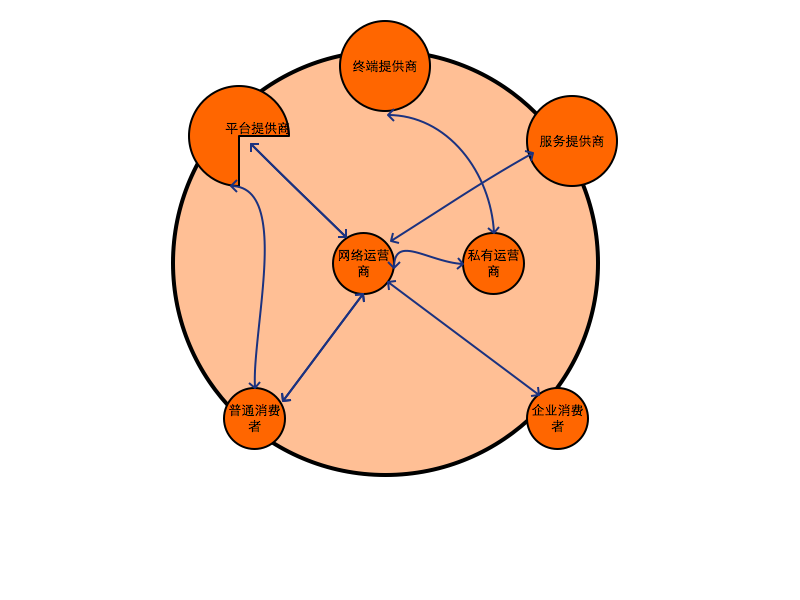
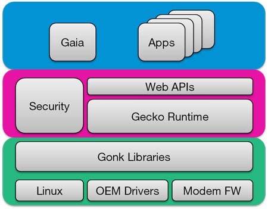
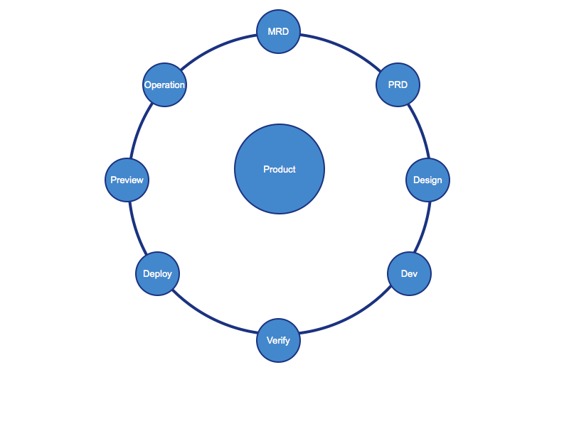

- 产业角度分析FireFox
- 平台角度分析FireFox
- 应用角度分析FireFox
- Q&A
议题
产业角度分析FireFox
当前产业生态系统
产业角度分析FireFox
当前产业生态系统 
产业角度分析FireFox
世界因为两个理由需要Firefox OS：
一，它可以让运营商降低对Android和苹果的依赖，二者分别占30%的APP营收；
二，它可以提供一种低成本方案让下一个20亿人进入互联网.
(Note:它也可以帮助硬件制造商摆脱对Google的依赖)
平台角度分析FireFox
- July 2011, Mozilla annouce: Boot to Gecko
- July 2012, B2G(Boot to Gecko) was rebranded as 'Firefox OS
- Feb 2013, Mozilla announced plans for global commercial roll-out of Firefox OS GAEO
平台角度分析FireFox
Firefox 架构简介图
大致分为三个层: 应用层，应用运行时层，系统底层

平台角度分析FireFox
Firefox 架构详细图

平台角度分析FireFox
Firefox 平台架构特点
- 重用Android资源
- 重用服务商资源
- 重用现有开发资源
- 免费开源

应用角度分析FireFox
3D 模式
- Design
- Development
- Distribution 
应用角度分析FireFox
App Development
- OWA standard: Open Web apps
- Packaged vs. Hosted Apps
- Packed apps are essentially a zip file
- HTML, CSS, JavaScript, images, manifest, etc.
-
Hosted apps are run from a server at a given domain, just like a standard website
-
Both app types require a valid manifest
- HTML5, CSS, Javascript, JQuery Mobile, WEBApi, IndexDB. WebWorker, SVG.
应用角度分析FireFox
Packaged Manifest file
类似AndroidManifest.xml
{
"version": "0.1",
"name": "Your App",
"description": "Your new awesome Open Web App",
"launch_path": "/index.html",
"icons": {
"16": "/img/icons/mortar-16.png",
"48": "/img/icons/mortar-48.png",
}
"installs_allowed_from": ["*"],
"locales": {
"es": {
"description": "Su nueva aplicación impresionante Open Web",
"developer": {
"url": "http://yourawesomeapp.com"
}
},
},
"default_locale": "en",
"permissions": {
"systemXHR": {}
}
}
应用角度分析FireFox
App Layout & Design
类似Layout
/ The following are examples of different CSS media queries /
/ Basic desktop/screen width sniff /
@media only screen and (min-width : 1224px) {
/ styles /
}
/ Traditional iPhone width /
@media
only screen and (-webkit-min-device-pixel-ratio : 1.5),
only screen and (min-device-pixel-ratio : 1.5) {
/ styles /
}
/ Device settings at different orientations /
@media screen and (orientation:portrait) {
/ styles /
}
@media screen and (orientation:landscape) {
/ styles /
}
应用角度分析FireFox
App Layout & Design
类似Activity
<html> <head> <meta charset="utf-8"> <title>My App</title> <meta name="description" content=""> <meta name="viewport" content="width=device-width"> <link rel="stylesheet" href="css/app.css"> </head> <body> <!-- Write your application here --> <script type="text/javascript" data-main="js/init.js" src="js/lib/require.js"> </script> </body> </html>
应用角度分析FireFox
Web API
类似 Android Platform API
// If this device supports the vibrate API... if('vibrate' in navigator) { // ... vibrate for a second navigator.vibrate(1000); }
应用角度分析FireFox
App Offline
- Application cache
- application cache, which stores resources for the app on the client system
- Checking connectivity
- listen for changes to, the window.navigator.onLine property.
- However, that value is not guaranteed to be accurate.
- Local storage
- IndexedDB
应用角度分析FireFox
Media Apps
- Offline DB
- WebGL
- Canvas
- WebWorker
应用角度分析FireFox
Tools & Testing.
- Firefox OS Simulator
- Unit Testing
- Unit tests are extremely valuable when testing on different devices and builds.
- jQuery's QUnit is a popular client-side testing utility, but you can use any set of testing tools you'd like.
- Installing Firefox OS on a Device
- Adb or other install tools.
- OTA portal
应用角度分析FireFox
Other tools
- App Generator
- https://marketplace.firefox.com/developers/docs/app_generator
- App Validator
- https://marketplace.firefox.com/developers/validator
- Firefox Developer tools
- https://marketplace.firefox.com/developers/docs/dev_tools
应用角度分析FireFox
Marketplace Submission
- A manifest file for your app.
- Web hosting for the app (the Firefox OS Marketplace does not host apps).
- See Publishing the app for more information.
- Read and understand the Marketplace review criteria.
Final
Reference：
- https://developer.mozilla.org/en-US/docs/Mozilla/Firefox_OS/Platform
- https://developer.mozilla.org/en-US/docs/Mozilla/Firefox_OS/Platform/Apps_architecture
- https://developer.mozilla.org/en-US/docs/Mozilla/Firefox_OS/Platform/Feature_support_chart
- https://developer.mozilla.org/en-US/docs/Mozilla/Firefox_OS/Platform/Testing
Q&A
<Thank You!>
Important contact information goes here.